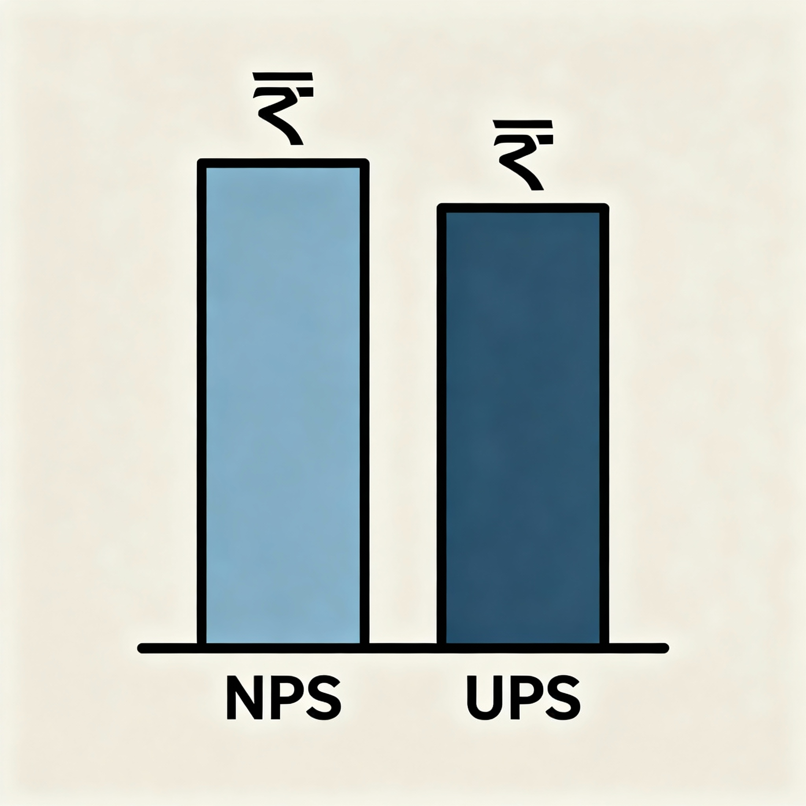

NPS vs UPS Pension 2025: Which Pension Scheme is Best for You?
Choosing between the National Pension System (NPS) and the Unified Pension Scheme (UPS) is one of the most important long‑term decisions for Indian employees, especially central government staff covered under NPS.
This guide explains NPS and UPS in simple language, compares their benefits, risks, tax rules and real‑life impact, and then answers the key question: which pension scheme is suitable for whom.

Key Takeaways: NPS or UPS?
- For Young Employees (<35 years): NPS is generally preferred due to the potential for higher corpus growth through long-term equity investments.
- For Senior Employees (>50 years): UPS is often safer as it provides a guaranteed, inflation-indexed pension, protecting against market volatility near retirement.
- Private Sector & Self-Employed: Only NPS is available. UPS is exclusively for eligible central government employees.
- Core Difference: NPS is a market-linked savings scheme where YOU bear the investment risk. UPS is a defined-benefit scheme where the GOVERNMENT guarantees the pension amount.
NPS vs UPS Pension: Quick Overview
The National Pension System (NPS) is a defined contribution, market‑linked pension scheme regulated by PFRDA and available to all Indian citizens including government, private and self‑employed workers.
The Unified Pension Scheme (UPS) is a defined benefit scheme introduced in 2024–25 for central government employees covered under NPS, offering guaranteed pension linked to last basic pay plus Dearness Relief.
In simple words, NPS focuses on building a retirement corpus through investments, while UPS focuses on giving a predictable, formula‑based monthly pension with inflation protection.
What is National Pension System (NPS)?
The National Pension System is a voluntary, long‑term retirement savings scheme launched by the Government of India and regulated by the Pension Fund Regulatory and Development Authority (PFRDA).
NPS was initially made mandatory for new central government employees from 1 January 2004 and was later opened to all Indian citizens, including NRIs and OCIs, in 2009.
Key features of NPS
- Open to all Indian citizens (18–70 years): central and state government employees, private sector, self‑employed and NRIs.
- Defined contribution: monthly or periodic contributions from employee (and employer where applicable) accumulate into an individual retirement corpus.
- Market‑linked returns: funds are invested in equity, corporate bonds, government securities and alternative assets through professional pension fund managers.
- Two account types: Tier‑I (retirement account with tax benefits and withdrawal rules) and Tier‑II (optional, flexible savings account without standard tax benefits).
- Unique PRAN: every subscriber gets a Permanent Retirement Account Number which remains the same across employers and locations.
NPS contribution and investment options
For central government employees, the standard NPS contribution is 10% of Basic Pay plus Dearness Allowance from the employee, and 14% from the government as employer contribution.
Private sector employers can contribute up to 10% of Basic plus DA (or 10% of salary) on behalf of employees, and self‑employed individuals can contribute up to 20% of gross income.
Subscribers can choose between Active Choice, where they decide their asset allocation across equity (up to 75%), corporate bonds, government securities and alternate assets, and Auto Choice, where allocation automatically changes with age.
NPS exit, withdrawal and pension
Normal exit from NPS happens at age 60 or superannuation, where up to 60% of the accumulated corpus can be withdrawn as a tax‑free lump sum and at least 40% must be used to buy an annuity plan to receive monthly pension.
Partial withdrawal of up to 25% of own contributions is allowed from Tier‑I after 3 years of subscription for specific purposes such as higher education, marriage, house purchase or critical illness.
Premature exit before age 60 is allowed if the subscriber has completed at least 5 years; in such cases, only 20% can be withdrawn as lump sum and 80% must be used to buy annuity, unless the corpus is below specified thresholds.
What is Unified Pension Scheme (UPS)?
The Unified Pension Scheme is a new guaranteed pension scheme approved by the Union Cabinet in August 2024 for central government employees who were earlier under NPS.
UPS aims to combine the fiscal discipline of contribution‑based schemes with the income security of a defined benefit pension, addressing concerns raised about NPS among government employees.
UPS coverage and eligibility
- Covers eligible central government employees who were enrolled in NPS and opt to shift to UPS within the notified window.]
- New central government recruits from 1 April 2025 also get the option to choose UPS instead of NPS, subject to rules issued by the Government of India.
- UPS is not currently available to private sector employees, self‑employed individuals or most state government employees, unless adopted by respective states.
Guaranteed pension under UPS
Under UPS, an employee with at least 25 years of qualifying service is entitled to a guaranteed pension equal to 50% of the average Basic Pay (plus applicable elements) drawn during the last 12 months of service.
For employees with service between 10 and 25 years, pension is calculated proportionately on the same 50% formula based on completed years of service.
A minimum pension of ₹10,000 per month is guaranteed for those with at least 10 years of qualifying service, ensuring a basic level of income even for shorter careers.
Family pension and inflation indexation
UPS provides family pension to the surviving spouse at 60% of the last pension drawn by the employee, continuing for the spouse’s lifetime as per applicable rules.
Pensions under UPS are automatically indexed to inflation through Dearness Relief (DR), which is linked to the All India Consumer Price Index for Industrial Workers, thereby preserving purchasing power over time.
Contribution structure under UPS
UPS retains a contribution system where employees contribute 10% of Basic Pay plus DA, similar to NPS.
The government contributes a total of 18.5% of Basic plus DA, of which 10% goes to the individual UPS account and the remaining 8.5% is credited to a pooled corpus to support guaranteed benefits.
This means the effective contribution into the individual account is 20% (10% employee + 10% employer), which is lower than the 24% combined contribution (10% + 14%) under NPS for central government employees.
UPS lump‑sum benefit
On retirement, UPS provides a one‑time lump‑sum amount calculated as one‑tenth of the monthly emoluments (Basic Pay plus eligible allowances for calculation) for each completed six months of qualifying service.
This lump‑sum is in addition to the guaranteed monthly pension and does not reduce the pension amount, unlike NPS where lump‑sum withdrawal and annuity are both funded from the same corpus.
NPS vs UPS: Detailed Feature Comparison

Side‑by‑side comparison table
| Feature | NPS (National Pension System) | UPS (Unified Pension Scheme) |
|---|---|---|
| Pension type | Defined contribution, market‑linked pension with no pre‑fixed pension amount; final pension depends on corpus and annuity rates. | Defined benefit with formula‑based, guaranteed pension as a percentage of last 12 months’ average basic pay. |
| Eligibility | All Indian citizens (18–70), including central/state government employees, private sector, self‑employed and NRIs. | Central government employees covered under NPS and new recruits who opt for UPS; not open to private sector or self‑employed. |
| Employee contribution | 10% of Basic + DA for government employees; flexible contributions for others. | 10% of Basic + DA. |
| Government / employer contribution | 14% of Basic + DA for central government employees; up to 10% for corporate NPS subscribers. | 18.5% of Basic + DA: 10% to individual UPS account + 8.5% to pooled corpus. |
| Total credited to individual account | 24% of Basic + DA for central government employees (10% employee + 14% employer). | 20% of Basic + DA (10% employee + 10% employer), with additional 8.5% going to common pool. |
| Guaranteed minimum pension | No guaranteed minimum pension; depends entirely on accumulated corpus and annuity selection. | ₹10,000 per month minimum pension for at least 10 years of qualifying service. |
| Full pension for long service | No fixed percentage of last salary; pension equals annuity purchased from 40% of corpus. | 50% of average basic pay for last 12 months for 25 or more years of qualifying service. |
| Family pension | Available only through specific annuity options such as joint life or return of purchase price, often at lower starting pension. | 60% of last pension drawn payable to surviving spouse, as per family pension rules. |
| Inflation protection | No automatic inflation indexation; annuity amount generally fixed or only slightly increasing in some products. | Dearness Relief (DR) linked to CPI is payable on pension, protecting it against inflation over time. |
| Lump‑sum at retirement | Up to 60% of corpus as tax‑free lump sum at retirement; remaining 40% must be used to buy annuity. | One‑time lump‑sum equal to 1/10th of monthly emoluments for each completed six months of service, in addition to guaranteed pension. |
| Tax benefits (old regime) | Deduction under 80CCD(1) within ₹1.5 lakh 80C limit + ₹50,000 extra under 80CCD(1B) + employer contribution under 80CCD(2). | Employee contributions enjoy the same 80CCD(1) and 80CCD(1B) benefits, and government’s 18.5% contribution is covered under 80CCD(2). |
| Portability | Fully portable across employers, states and sectors with same PRAN. | Linked to central government service; account structure similar to NPS but benefit rules tied to government employment. |
| Market risk | Yes, corpus value fluctuates with equity and debt market performance. | Investment risk largely borne by the government; employee gets formula‑based pension. |
NPS vs UPS: Contribution Structure Chart
The chart below visually compares employee and employer contribution percentages under NPS and UPS for central government employees.
Who Should Choose NPS?
1. Young professionals (age 25–35)
Young central and state government employees, private sector staff and self‑employed persons with 25–35 years to retirement can benefit from the long‑term compounding and higher equity exposure available in NPS.
Over a 30‑plus year horizon, a diversified NPS portfolio with up to 75% equity allocation can potentially generate a much larger corpus than the benchmark needed to fund a 50% salary pension, especially if markets deliver historical‑range equity returns.
2. Risk‑tolerant investors
NPS is more suitable for employees who are comfortable with market volatility, follow long‑term investing principles and can stay invested during temporary downturns without panic.
Such investors can actively choose high‑quality pension fund managers, periodically review performance and rebalance allocations between equity, corporate bonds and G‑secs to optimize risk‑adjusted returns.
3. Private sector and self‑employed individuals
Since UPS is not available to private sector workers or self‑employed professionals, NPS effectively becomes the main structured pension option for this large segment.
Corporate NPS allows employers to contribute up to 10% of salary with tax benefits under section 80CCD(2), while self‑employed subscribers can claim deductions on their own contributions under 80CCD(1) and 80CCD(1B) in the old regime.
4. Those who want a big lump‑sum at retirement
Subscribers who value a large, tax‑free lump sum on retirement for goals such as clearing loans, children’s higher education, or starting a business may prefer NPS.
With up to 60% of the NPS corpus available as tax‑free lump sum and the option to defer withdrawals and annuity purchase up to age 75, NPS gives more flexibility in structuring retirement cash flows compared with UPS.
Who Should Choose UPS?
1. Senior employees (age 50+)
Central government employees close to retirement, typically in the 50–60 age group, have limited time for corpus growth and less capacity to recover from major market downturns.
For them, the certainty of a formula‑based 50% pension plus Dearness Relief under UPS can be more valuable than the possibility of higher but uncertain pension from a market‑linked NPS corpus.
2. Risk‑averse individuals and families
Employees who are uncomfortable with investment risk or who do not closely track markets and fund performance may prefer UPS, which shifts the investment and longevity risk largely to the government.
Households that prioritise predictable, inflation‑protected income and clear family pension rules may find UPS psychologically and practically more suitable than a variable NPS pension.
3. Employees with shorter service (10–20 years)
For employees who joined late or expect to complete only 10–20 years of qualifying service, the guaranteed minimum pension of ₹10,000 and proportionate pension formula under UPS can be more attractive than the smaller NPS corpus that might accumulate over a short period.
In such cases, UPS acts as an income‑security floor, whereas NPS outcomes may be significantly lower if contribution duration is short and markets underperform in that period.
4. Those prioritising family pension and inflation protection
UPS offers transparent family pension rules (60% of last pension for spouse) and automatic Dearness Relief on pension, which together provide long‑term security for surviving family members.
By contrast, replicating similar family and inflation protection via NPS usually requires choosing specific annuity options that start with lower initial pension and may not fully match UPS’s DR‑linked increases.]
Visual Decision Tree: NPS or UPS?
The following decision‑tree infographic summarises the age‑ and risk‑based approach to choosing between NPS and UPS for central government employees.

Age‑Wise Decision Guide: Below 35, 35–50, 50+ Years
Below 35 years: NPS usually preferred
Employees below 35 typically have 25–35 years until retirement, giving enough time for equity‑heavy NPS portfolios to ride out volatility and deliver strong compounding.
Multiple analyses show that for such long horizons, realistic equity returns can generate NPS corpuses large enough to equal or exceed the lifetime value of a 50% UPS pension, especially when the 60% tax‑free lump sum is reinvested wisely.
Age 35–50 years: depends on risk appetite
In the 35–50 bracket, employees still have 10–25 years to retirement, so both NPS and UPS can be reasonable depending on individual risk tolerance and financial situation.
Those with higher risk appetite and diversified personal investments may continue with NPS, while those uncomfortable with volatility, heavily dependent on pension income, or having limited other assets might lean towards UPS.
Above 50 years: UPS often safer
For employees above 50, the time left for contributions and compounding is small, while the danger posed by a late‑cycle market crash is high.
In this age band, the guaranteed UPS pension with DR indexation reduces sequence‑of‑returns risk and longevity risk, and therefore becomes a safer and often more rational choice.
Tax Benefits: NPS and UPS under Section 80CCD
Old tax regime: NPS and UPS deductions
Under the old tax regime, employee contributions to NPS or UPS qualify for deduction under section 80CCD(1) within the overall ₹1.5 lakh 80C limit.
An additional exclusive deduction of up to ₹50,000 is available under section 80CCD(1B) for NPS/UPS contributions, effectively allowing up to ₹2 lakh in combined deductions for retirement savings.
Employer contributions to NPS or UPS are deductible under section 80CCD(2), up to 14% of salary for central government employees and 10% for other employers, and this is over and above the 80C ceiling.
New tax regime: limited benefit
Under the new tax regime, deductions under sections 80CCD(1) and 80CCD(1B) are not available, so employee‑side tax benefits on NPS contributions are largely removed.
However, employer contributions under section 80CCD(2) are still deductible even in the new regime, making government or corporate contributions to NPS/UPS valuable from a tax‑planning perspective.
Tax on withdrawal and pension
In NPS, the 60% lump‑sum withdrawal at normal exit is fully tax‑exempt, while the monthly pension received from the annuity purchased with the remaining 40% is taxed as income according to the subscriber’s slab.
In UPS, detailed tax rules for the lump‑sum component are being notified, but the monthly pension is expected to be taxable like other government pensions, with Dearness Relief not separately taxed.
FAQs: Common Questions on NPS vs UPS Pension
1. Is UPS better than NPS for every government employee?
No, UPS is not automatically better for every government employee; it is usually more suitable for those who are risk‑averse, close to retirement, or likely to complete only 10–20 years of service, while younger and more risk‑tolerant employees may build higher lifetime wealth through NPS.
2. Can a government employee switch from NPS to UPS?
Yes, central government employees covered under NPS have been given a one‑time option within the notified window to switch to UPS, but this choice is generally irreversible once exercised.
3. Can a UPS subscriber go back to NPS later?
As per current policy, the switch from NPS to UPS for eligible central government employees is intended to be final, so moving back from UPS to NPS is not normally permitted once opted.
4. Do private sector employees have any choice between NPS and UPS?
No, private sector employees and self‑employed individuals can only invest in NPS and do not have the option to join UPS, which is a scheme designed for central government employees.
5. How can I compare my own NPS vs UPS numbers?
Government employees can use online NPS calculators and UPS calculators, as well as combined NPS vs UPS comparison tools, where they can input present basic pay, age, expected retirement age and projected returns to see estimated pension and lump‑sum amounts under both schemes.
Conclusion: Which Pension is Suitable for Whom?
There is no single “best” pension scheme for everyone; NPS and UPS are designed for different risk profiles and career paths, and the right choice depends mainly on age, risk appetite, length of service and dependence on pension income.
In general, young and financially aware employees with long service ahead, especially in the private or self‑employed sector, should focus on maximising NPS benefits, while risk‑averse or near‑retirement central government employees may find the guaranteed, inflation‑linked pension of UPS more suitable.
The safest way is to run your own numbers using NPS and UPS calculators, consider your family’s financial security needs, and, if required, consult a qualified financial planner before using your one‑time option to shift from NPS to UPS.